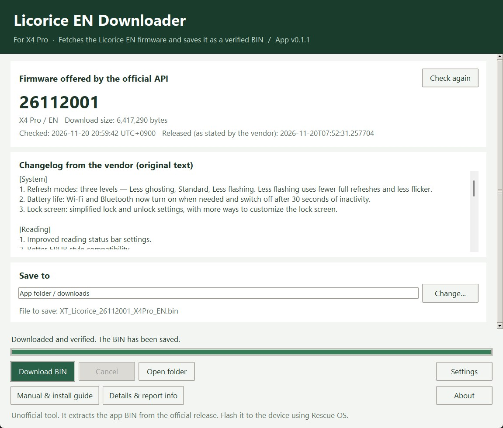

On small screens, the release info, changelog and destination areas scroll vertically. Download, Cancel, Settings and Manual always stay visible at the bottom.
The app fetches the Licorice EN build for X4 Pro that the official Global update API currently offers, and saves the app BIN used with Rescue OS to your PC. You don't need to connect the device, sign in, or enter a device ID.
LicoriceENDownloader.exe.Only X4 Pro is supported in this first version. The app can't download firmware for X4, X4 Classic, X3 or other models.
The UI is shown in English or Japanese according to the Windows display language. You can change it under Settings → 表示言語 / Language. The change takes effect after you restart the app.
Extract the whole development ZIP to a folder you can write to. Don't run the EXE from inside the ZIP. You don't need to install Python.
The supported range of Windows versions is still being checked. Development uses Windows x64, Python 3.10.11 and Tcl/Tk 8.6.12. The EXE is not code-signed.
If Windows shows a warning on launch, check that you got the ZIP from the release page below and that its SHA-256 matches the published value. If you can't tell, don't run it, and ask the distributor. You don't need to turn off any protection features.
Download from GitHub Releases. Normally you want the Windows portable ZIP. “Code → Download ZIP” is the source code.
The app queries the official API at startup. Click Check again to query it again. “Firmware offered by the official API” is the version offered in that query. It is not a guarantee that this is the newest version on every distribution channel.
The app version and the firmware version are different things, e.g. “App v0.1.1” and firmware “26112001”. The changelog is shown exactly as the vendor wrote it. The API doesn't state a time zone for the release date, so it is shown as given.
downloads folder next to the EXE. Click Change… to pick another location.Example file name: XT_Licorice_26112001_X4Pro_EN.bin. It is the unmodified app image, with no patches or padding added. It is not a full flash image, a bootloader, or a device backup.
Click Cancel to request cancellation. It can take up to about 15 seconds for the transfer to stop. If the request arrives after the BIN has already been committed, the save is reported as completed.
This chapter is for X4 Pro devices that already have Rescue OS installed. If you still need to set it up, go to chapter 5.
Depending on the current slot layout, firmware in another slot may be replaced. This app neither inspects nor changes the slot layout.
Rescue OS for X4 Pro, release article by its author “E” (note, in Japanese)
It is available from the download section of that article. As of November 13, 2026, it lists rescue-os-x4pro-v1.1.zip (updated November 12, 2026). Check the article for updates and installation instructions.
Preparing Rescue OS is separate from downloading firmware. Specific setup steps will be published after the target versions, device states and installation methods have been checked.
Hands-on checks of supported versions and devices, backup, booting, write targets and restoring are still to be done. This app never modifies a device on its own.
For now, no steps for untested bootloader changes or rewriting per-device settings are provided.
| Term | Meaning |
|---|---|
| EN build | The firmware variant distributed on the official Global channel. The CN build can differ in content even with the same version number. |
| Display language | Depends on both the device language setting and the translations included in the firmware. |
| Region | The region setting on the device. Saving firmware to your PC does not change it. |
Getting the EN build alone does not guarantee that every language is available on every device. If the language options are not what you expect, check the installed package, the device settings and the firmware version.
In Settings you can choose to also save the original XOTA and an info JSON (not needed for a normal BIN download), and choose the display language (Auto, 日本語, or English).
| File / folder | Contents |
|---|---|
settings.json | Destination, extra-file choices, display language and window position. Created in the same folder as the EXE. |
downloads/ | Default firmware destination. |
logs/ | Local log, 256 KiB per file, two previous generations kept. Never sent anywhere. |
*.xota | The vendor's encrypted file, saved optionally. |
*.json | Release info and verification results, saved optionally. No device-specific information is recorded. |
A destination inside the app folder is stored as a relative path, so you can move the whole folder. An external destination stays where it is.
To update the app, close it first, extract the new version, and keep settings.json and your downloaded firmware. Release ZIPs never contain settings, logs or firmware.
Check your internet connection and click Check again. It can also fail if the API changes, the release is withdrawn, or the URL expires. The app tries at most twice and never retries endlessly.
No BIN is saved. Check the release info again and retry. If it keeps failing, look at Details & report info. There is no way to save without verification.
Check free space and write permission, and make sure the file is not in use. Choose another destination, or move the whole app folder somewhere writable. Saving settings and saving the BIN succeed or fail independently.
When possible, a broken settings file is kept as settings.broken-<date>.json. If the format is unsupported or the file can't be backed up, the original is left untouched and settings are not saved automatically.
The BIN is saved. A failed XOTA or JSON never causes the BIN to be deleted. Check the details and, if needed, choose another destination and download again.
Use Details & report info → Copy report info, review the text, and include it in your report. It contains the app version, OS, target firmware and error type. You don't need to post the full log or a device backup.
Unreleased: English UI. The app follows the Windows display language and can be switched under Settings. English manual and read-me.
v0.1.1 (November 13, 2026): Fixed cancelling before the save is committed, overwriting only confirmed files, slow transfers, malformed settings and API responses, shutdown handling and copying the report. The main actions stay fixed at the bottom, and content scrolls on small screens.
v0.1.0 (November 13, 2026): First implementation: Japanese GUI, official API query, XOTA extraction, verification, portable settings and development EXE.
GitHub repository and source code / Releases / Bugs and requests. The app is released under the MIT License.
This app is not affiliated with XTEINK. For third-party licenses, see the bundled THIRD_PARTY_NOTICES.md and the licenses folder.